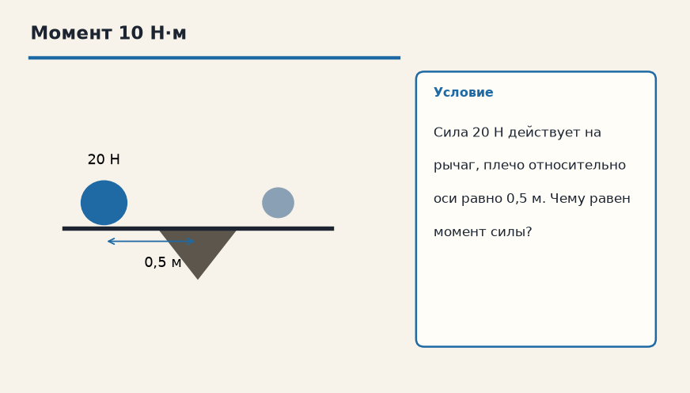

Тема «Момент силы (Условие равновесия)»: физический смысл, единицы величин, типичные ошибки и два разобранных примера.

Схема к условию.
Физический смысл
Рычаг находится в равновесии, если моменты сил, вращающие его по часовой стрелке, равны моментам сил, вращающим против.
Момент силы M = F·l показывает, насколько сила вращает тело вокруг выбранной оси. Плечо l — это не «длина рычага вообще», а кратчайшее расстояние от оси до линии, вдоль которой действует сила.
Рычаг в равновесии, когда моменты по часовой стрелке уравновешены моментами против. Можно записать это как равенство F₁·l₁ = F₂·l₂, если две силы вращают в разные стороны.
Отсюда качели: тяжёлого сажают ближе к оси, лёгкого — дальше. Меньшая сила на большем плече даёт тот же момент.
Формула и единицы
M = F · l
l — плечо силы (расстояние от оси вращения до линии действия силы).
M = F·l. l — плечо, расстояние от оси вращения до линии действия силы.
Пояснение
Качели. Чтобы уравновесить толстого дядю, нужно посадить ребенка дальше от центра.
На качелях толстого дядю уравновешивает ребёнок, если ребёнок сидит дальше от оси: плечо больше.
Типичные ошибки
Плечо меряют до линии действия силы, перпендикулярно ей, а не вдоль рычага «на глаз», если сила косая.
Схему к задаче нарисуйте сами. Решение открывается отдельно.
Разбор 1
Гайка
Гаечный ключ: сила 15 Н, плечо относительно оси болта 0,4 м. Найдите момент.
Сначала данные, затем перевод в СИ, если он нужен, потом ход и ответ.
Дано. F = 15 Н, l = 0,4 м
В СИ. Перевод не нужен: все величины уже заданы в СИ.
Найти. M
Решение.
M = 15 · 0,4 = 6 Н·м.
6 Н·м.
Схема для сверки. Её рисуют до того, как открывают решение.
Разбор 2
Качели
Слева ребёнок давит силой 200 Н на плече 1,5 м. На каком плече должен сидеть взрослый весом 300 Н, чтобы качели были в равновесии?
Сначала данные, затем перевод в СИ, если он нужен, потом ход и ответ.
Дано. F₁ = 200 Н, l₁ = 1,5 м, F₂ = 300 Н
В СИ. Перевод не нужен: все величины уже заданы в СИ.
Найти. l₂
Решение.
200 · 1,5 = 300 · l₂.
l₂ = 300 / 300 = 1 м.
1 м.
Схема для сверки. Её рисуют до того, как открывают решение.
Разбор 3
Косая сила
Силу 20 Н приложили не под прямым углом к рычагу. Вдоль рычага от оси до точки приложения 0,5 м, а перпендикуляр от оси до линии силы равен 0,3 м. Найдите момент.
Сначала данные, затем перевод в СИ, если он нужен, потом ход и ответ.
Дано. F = 20 Н, плечо 0,3 м
В СИ. Перевод не нужен: все величины уже заданы в СИ.
Найти. M
Решение.
Плечо — перпендикуляр до линии действия, не отрезок вдоль рычага.
M = 20 · 0,3 = 6 Н·м.
6 Н·м.
Схема для сверки. Её рисуют до того, как открывают решение.
Разбор 4
Через ось
Линия действия силы проходит через ось вращения. Чему равен момент?
Сначала данные, затем перевод в СИ, если он нужен, потом ход и ответ.
Дано. плечо равно нулю
В СИ. Перевод не нужен: все величины уже заданы в СИ.
Найти. M
Решение.
M = F · 0 = 0.
0.
Схема для сверки. Её рисуют до того, как открывают решение.
Разбор 5
Два момента
Момент 8 Н·м вращает рычаг по часовой стрелке, момент 8 Н·м — против. В равновесии ли рычаг по условию моментов?
Сначала данные, затем перевод в СИ, если он нужен, потом ход и ответ.
Дано. M по час. = M против
В СИ. Перевод не нужен: все величины уже заданы в СИ.
Найти. равновесие
Решение.
Моменты противоположных направлений равны.
Условие равновесия выполнено.
Да.
Схема для сверки. Её рисуют до того, как открывают решение.
Разбор 6
Ньютон и сантиметр
Сила 50 Н, плечо 20 см. Найдите момент.
Сначала данные, затем перевод в СИ, если он нужен, потом ход и ответ.
Дано. F = 50 Н, l = 20 см
В СИ.
20 см = 0,2 м.
Найти. M
Решение.
M = 50 · 0,2 = 10 Н·м.
10 Н·м.
Схема для сверки. Её рисуют до того, как открывают решение.
Разбор 7
Коромысло
На одном конце сила 12 Н имеет плечо 0,25 м. Какая сила на плече 0,15 м уравновесит её?
Сначала данные, затем перевод в СИ, если он нужен, потом ход и ответ.
Дано. F₁ = 12 Н, l₁ = 0,25 м, l₂ = 0,15 м
В СИ. Перевод не нужен: все величины уже заданы в СИ.
Найти. F₂
Решение.
12 · 0,25 = F₂ · 0,15.
3 = 0,15 F₂, F₂ = 20 Н.
20 Н.
Схема для сверки. Её рисуют до того, как открывают решение.